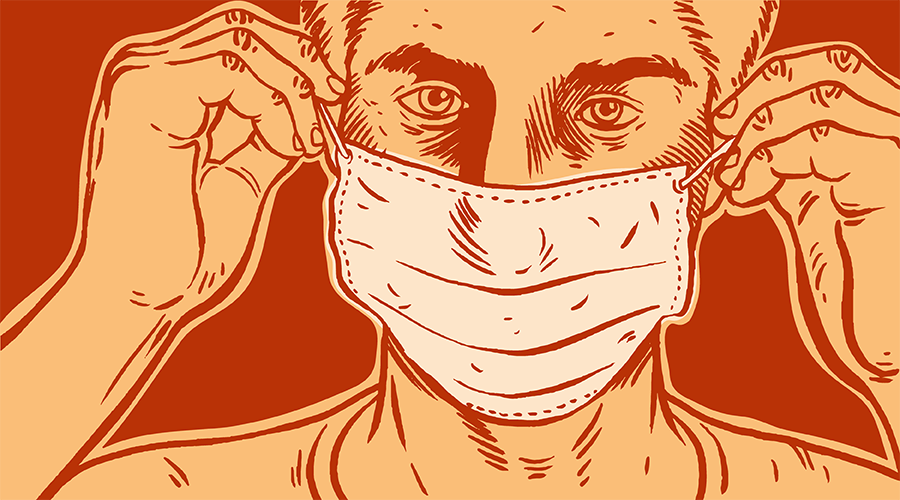
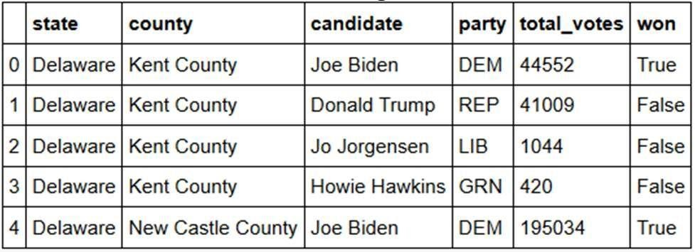
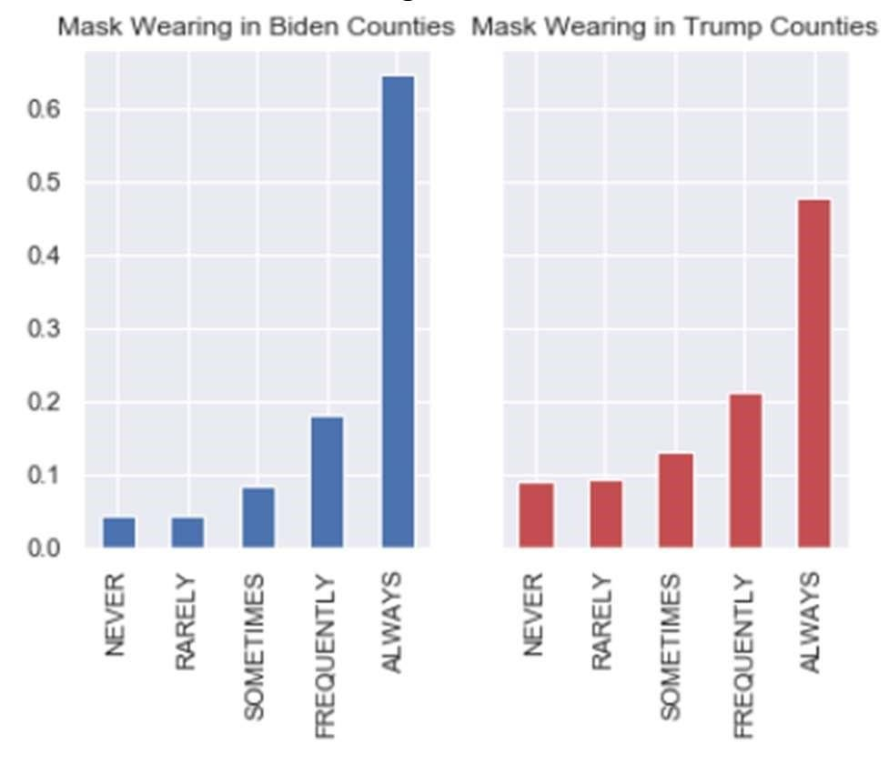
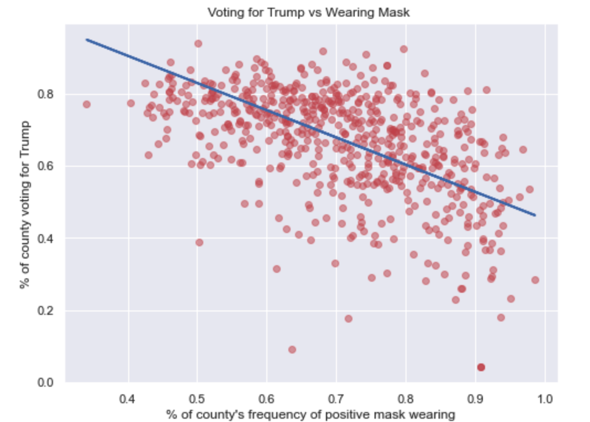
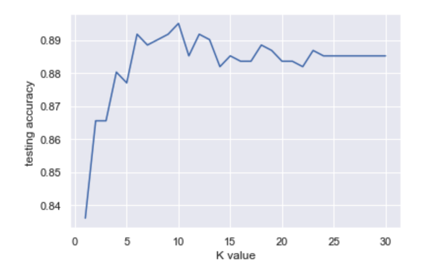

Political Affiliation and Mask Wearing During the COVID-19 Pandemic

Abstract
The two party system has long dictated America's politics. Ever since the US election of 1852, political partisanship has withstood the multiple attempts of a third party's integration. Graduadally and consequently, the two parties developed opposite views on a multitude of issues, and the gap continued to polarize after the Senate Election of 2014 and the inaguration of Donald Trump.
Growing up as an immigrant Taipei, San Diego, and Connecticut, I've always been surrounded in a progressive political climate. So when I was informed that wearing a mask was a partisan issue during the COVID19 global pandemic, I was beyond shocked: mask wearing during sickness has long been normalized in Asia, and I had never thought that this public health issue would be a political
topic of dispute.
I am lucky to endure the covid crisis in places that have so far been implementing the appropriate public health guidelines, and as a result, I very seldom encounter people without mask in public places. This makes me wonder, what is the mask wearing situation in places where, due to the partisan political climate, people voted conservatively? Furthermore, how much does mask wearing tendencies correlate with the voting of a county in the 2020 Election?
Hence, here I deploy numerous statistical techniques to try to answer that question.

1. Background
Two datasets were used, both hosted on GitHub.
The first contained survey data from the New York Times on mask usage within each county across the United States. This data was gathered from 250,000 survey responses online between July 2 and 14 by the global data and survey firm Dynata. While 250,000 is only a small percentage of the entire US population, the survey received results from each of the over-3000 counties across the united states. This survey asked “How often do you wear a mask in public when you expect to be within six feet of another person”. The answers to this question consisted of 5 different options: Never, Rarely, Sometimes, Frequently, and Always.
Table 1. Vertices of Mask Usage Data Set
The other dataset had the voting results per county in the United States. The variables in this dataset included who the county voted for in majority, how many votes were tallied, as well as which presidential candidate won the counties majority vote and the corresponding political party of this candidate.

Table 2. Vertices of Voting Results Data Set
2. Methodology
Given that there was data labeled with the winner of the presidential election in a given county, the focus shifted on supervised machine learning methods to explore the relation between a county’s mask usage and voting results.
2.1. Modeling Algorithms
I wanted to explore this proposed analysis utilizing two forms of regression to compare the effectiveness of each model. A single variable linear regression was used to discover the correlation between Joe Biden votes and mask usage, and a similar linear regression for Donald Trump's votes was calculated as well. I also used logistic regression, because it is more suitable for data containing a binary labels, like whether a candidate won or lost the election in a county. The model's parameters were both trained on sklearn’s default parameters. This includes penalty l2, regularization value of 1.0, class_weight of None, and a default ‘lbfgs’ solver.
Finally, I analysed the dataset with a K-Nearest Neighbors model. Twenty-five values of K ranging from K = 1 to K = 30 were used. KNN was chosen as a supplementary model because of its advantage in predicting categorical outcomes. I also speculate that mask wearing and counties may fall into clusters instead of distinct groups, which would not be revealed by other ML techniques like SVM and Neural Networks.
2.2 Data Configuration
The Mask usage datasets' vertices add up to 1, seeing as they are percentages: % answered Never + % answered Rarely + % answered Sometimes + % answered Frequently + % answered Always = 1. In order to use this data, it is necessary to change these responses into a positive/negative discrete variable for mask wearing: "positive mask wearing" was categorized as the summed percentage of "Frequently" and "Always", and the aggregate of the rest to be negative mask wearing.
2.3. Metrics of Analysis
Mean square error term was utilized to track error of fitted models, and the confusion matrices was implemented to look at how well the model performed. The coeffients are examined to determine how the variables correlate with each other.
3. Results
The first results a correlation between the likeliness to wear a mask and the voting of a presidential candidate.

Table 3. Mask wearing vs. Candidate
3.1. Linear Regression (Biden)
Our linear model for Biden voting is as follows, with a mean squared error of 0.02:
Percentage of voting for Biden = [-0.07460831] + [0.57474506] * positive mask wearing
A coefficient of around 0.56 was obtained for voting for Biden and positive mask wearing. This means that for every 10% point increase in positive mask wearing, a county would see a on average a 5.6% point increase in voting percentage for Biden. The coefficient of the independent variable has a t-value of 16.5, meaning that it is statistically confident that the increase of Biden's voting percentage is not a result of chance.
Table 4. Biden vs. Mask Wearing
3.2. Linear Regression (Trump)
The linear model for Trump voting is as follows, with a mean squared error of 0.02.
Percentage of voting for Trump = [1.20809976]
[-0.755639361] * positive mask wearing

Table 4. trump vs. Mask Wearing
The linear regression for Trump showed a more extreme correlation between mask wearing and voting percentage. The coefficient for positive mask wearing is -.755, meaning that this model would predict that for a 0.01 increase in positive mask wearing, a county would see a 0.00755 decrease in voting percentage for Trump.
The Coefficient of determination for both models seems around the same, at 0.26 for Biden and 0.24 for Trump. In other words, the voting percentage for both models are affected by positive masking wearing in the same variability. Therefore, a similar analysis from both models is observed, and further analysis of the Trump results would be repetitive.
3.3. Logistic Regression
The testing accuracy achieved by the logistic regression is reasonably high at 0.88. However, due to the skewed nature of the dataset, with inherently more counties voting for Trump than Biden, it is clear that while the model is performed very well at predicting counties not voting for Biden, it is quite poor at predicting counties voting for Biden. From the confusion matrix, 588 predictions are ‘no’, outnumbering the predictions for ‘yes’ of 22 predictions.
3.4. KNN
In training the KNN model, it is found that the K-value of 10 to lead to the highest outcome for
predicting mask wearing with an accuracy around 90%. However, we can also argue that the true amount of clusters lie around k = 6 or 7, both of which possessing a similar testing accuracy, while preserving a more intuitive sense to the natural amount of clusters a mask wearing data set possesses.

Table 6. KNN Training
4. Discussion
With the findings it is clear that there exists at least a correlation between political affiliation and mask usage. Substantial evidence is found to suggest that the lower the mask usage of a county the more likely the county was to vote Republican in the 2020 presidential election, and conversely, the higher the mask usage in a county, the higher chance the county voted for Biden. This could imply that political affiliation motivates a person’s attitude towards mask wearing or vice versa, but as this only shows correlation, no such causation could be made. It may be that factors influencing a person to wear a mask may also influence them to vote Democrat (rather than either causing the other).
For further analysis it would be interesting to explore this topic with population density in mind. Biden won the popular vote even though he only won 486 counties, as compared to Trump’s 2560, as a result of Trump winning more rural counties with lower populations and lower population densities. This caused our logistic regression model to predict too many counties as Trump voters. A future analysis could only compare Democrat-voting and Republican-voting counties with similar populations or population densities.
Another route for future work would come from further utilizing location data. Given the county and population numbers above, it would be interesting to see how models for different states could vary in their predictions.
In addition, a further study could incorporate data on COVID-19 cases or deaths per county, as either could be revealed as a confounding variable to the correlations that was found. Such a study could examine if political affiliation has a stronger or weaker correlation with COVID-19 spread than mask usage, or if mask usage variation can be explained more by the amount of COVID-19 spread in a county than its political results.
5. References
Linear Regression Documentation:
https://scikitlearn.org/stable/modules/generated/sklearn.linear_model.LinearRegression.html
Logistic Regression Documentation:
https://scikitlearn.org/stable/modules/generated/sklearn.linea r_model.LogisticRegression.html
KNN Documentation:
https://scikitlearn.org/stable/modules/generated/sklearn.neig hbors.KNeighborsClassifier.html
Mask Usage Github:
https://github.com/nytimes/covid-19-data